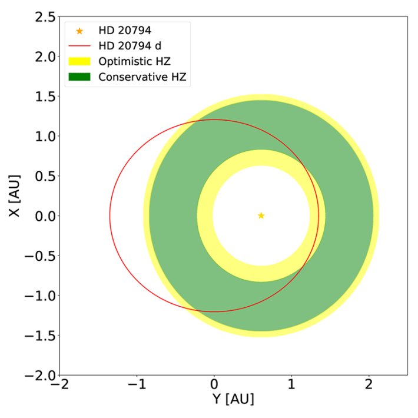

Earth’s history has beenpunctuated by at least five major ice ages. Some of these frigid periods of prolonged global cooling saw much of our planet locked in ice and snow for 100 million years. It may seem counterintuitive, with the current anthropogenic warming that Earth is experiencing, but we’re actually in the midst of one—the Quaternary Ice Age—that started about 2.6 million years ago. (Thankfully, within the broader context of our current ice age, we’ve been experiencing an interglacial period, when ice sheets and glaciers are melting and contracting, for the past 11,000 years or so.)
The term “Ice Age” conjures images of wooly mammoths roaming snow-encrusted plains and human ancestors grunting across the frozen landscape, hunting them, barely scraping by in a harsh environment. But we might, in fact, owe a great debt to Earth’s grand and dramatic shifts. In fact, scientists are coming around to the idea that wide vacillations in a planet’s climes might actually be a hallmark of habitability. And the drivers are of a cosmic scale.
Earth has progressed through long periods of colder and warmer climatic conditions in large part because the planet, on its elliptical orbit around our nearest star, shifts slightly both in terms of its orbital path and in the degree to which it is tilted toward or away from the sun.
This insight, as established as it is today, took decades to solidify and support with astronomical evidence. Western astronomers have known that the Earth’s orbit is not perfectly round since Johannes Kepler reported back in the early 17th century that the planets’ trajectories around the sun are actually ellipses.
Yet the exact shape of Earth’s orbit—its eccentricity, a measure of an orbit’s non-circularity—is constantly changing. Earth oscillates between being a near-perfect circle (with an eccentricity of less than 1 percent) up to a maximum eccentricity of about 6 percent about every 100,000 years.
We might owe a great debt to Earth’s grand and dynamic shifts.
Meanwhile, Earth’s tilt on its axis, or obliquity, oscillates between about 22 and 24 1/2 degrees roughly every 41,000 years. The obliquity (which is currently 23 1/2 degrees) is what determines the strength of the seasons, as well as the width of the tropics. The direction that Earth’s spin axis is slowly shifting as well, oscillating on a timescale of some 26,000 years and causing a slow shift in the positions of the stars in the sky, is the planet’s precession.
But it wasn’t until the early 20th century that Serbian astronomer Milutin Milankovitć developed the theory that astronomical changes drive variations in our climate. He asserted that Earth’s ice ages must correlate with Earth’s orbital eccentricity, obliquity, and precession. Decades later, in 1976, a landmark study led by Earth scientist James D. Hays of Columbia University used ocean floor sediments to confirm the cyclical nature of ice ages, showing that there are indeed timescales imprinted on Earth’s past climate that reflect the 26,000-, 41,000-, and 100,000-year timescales inherent in the oscillation of Earth’s orbital shape and spin. This was some of the first concrete evidence of the existence of what are now called Milankovitch cycles.
Now, many astronomers who are searching far and wide for planets that might be capable of supporting life are gathering evidence that the more extreme a planet’s orbital and positional oscillations, the more hospitable it may be to life.
Traditionally, the thinking has been that a perfectly circular orbit gives a planet the best chance for developing and hosting life. Of course, there are plenty of other factors that are key ingredients in the recipe for life—at least, life as we know it. One of the main ones has been orbital distance from a star, which translates to the average planetary temperature and leads to the concept of the “habitable zone,” the Goldilocks-esque belt around a star in which a planet’s climate could be just right—neither too cold, nor too hot—to harbor liquid water. A potentially habitable planet must also have an atmosphere that is not too thick or thin, to let in just the right amount of star-borne radiation for heat and energy. Plate tectonics may help as well, shifting slabs of a planet’s outer layer bringing vital elements and heat up from its core. These constraints aside, it is only in recent years that a planet’s orbital eccentricity and obliquity have come to be considered significant factors in habitability.
The picture emerging now is that planets that experience wild swings in their eccentricities, obliquities, and precessions may be “superhabitable.” This could mean that ice ages coming and going could signal a planet that is more likely to host biological organisms than one with a more steady climatic history, as first explored in a pioneering 2014 paper by René Heller, then at McMaster University, and John Armstrong from Weber State University.1 And it could also greatly increase the number of likely suspects for life-bearing planets in our universe.
A slew of recentstudies have used computer simulations to model the hypothetical conditions on rocky exoplanets with exotic orbits and spin states. What they show is that, contrary to the standard thinking, both land-dominated and ocean-dominated planets appear to benefit from having extremely elliptical orbits or very tilted spin axes. Earth-like planets on non-Earth-like orbits might be just as likely as Earth to harbor life—maybe even more likely. Given the abundance of non-circular orbits among exoplanets—with half of all gas giants having eccentricities larger than 25 percent (that is, with orbits more than five times more stretched-out than Jupiter’s or Saturn’s)—this opens up a new landscape of planetary habitability.
A 2023 study, published in The Astrophysical Journal, modeled what might make such a “superhabitable” planet.2 The study, by Jonathan Jernigan and colleagues at Purdue University, coupled a climate model to a 3-D biogeochemical model, which mathematically captures the main chemical reactions that nourish Earth-like marine life while also taking into account factors such as ocean circulation and heat and salinity transport. The researchers showed that the biological productivity of the oceans on these hypothetical planets increases with more eccentric orbits or higher obliquity because, with these sorts of variations, the increased surface temperature variations cause vertical mixing in the oceans to increase. Vertical mixing is sometimes called the “biological pump,” as it transfers organic material from the upper layers of the ocean where photosynthesis is active down to the depths, and brings nutrients from the depths back up. The study found that increasing the obliquity all the way up to 90 degrees or the eccentricity up to 40 percent can increase the total productivity of the oceans by up to a factor of 3 to 4. The productivity in a given area was strongly seasonal, but the net effect across the globe was a significant increase in productivity relative to a zero-obliquity planet on a circular orbit.

ALL IN THE WOBBLE: A recently discovered exoplanet, HD 20794 d, orbits its star in an elliptical orbit. This oblong path would put it in either an optimistic or conservative habitable zone for a large chunk of its year. Credit: Nari, N., et al. Astronomy & Astrophysics (2025).
This result expands the habitats that are relevant in the search for life in the universe. Among the more than 5,000 exoplanets discovered to date, there are currently 29 rocky planets in the habitable zone. Most of these planets are found in systems with other similar-sized planets and occasionally ice giants or gas giants—and many other planets may be lurking below our current detection thresholds. Their fellow planets cause oscillations in the rocky planets’ orbital eccentricities and spins that could span a wide range in both amplitude and timescale. Such planets would traditionally have been discounted as being unlikely to be fertile, but this model suggests just the opposite.
But need the extremes be so extreme? In a study published earlier this year, a team led by Paul Lerner at Columbia University and Goddard Institute for Space Studies, performed a similar set of simulations but with a different code and technique.3 They found that biological productivity in the oceans increased modestly (by up to 15 percent) for obliquities as high as 45 degrees, but then decreased for higher obliquities.
Such swings also seem to be helpful in creating life-conducive conditions on land. A 2024 study led by Binghan Liu at the University of Leeds found that the surface habitability of planets like Earth increases for eccentric orbits.4 The team simulated the climate for a circular orbit and one with an eccentricity of 40 percent—in both cases with zero obliquity. The planet with the eccentric orbit, in their model, gained a good chunk (more than 25 percent) of land that would have a temperature range ideally suited for life (between 32 and 122 degrees Fahrenheit) over the planet with a perfectly circular orbit. The simulated eccentric-orbit Earth was warmer overall (by a couple of degrees). This increase in warmer terrestrial space was due to the fact that the air circulation patterns on the eccentric Earth-like planet were more effective at lifting warm air from the equator and moving it to higher latitudes.
And a recent study published in Science has been able to tease apart the separate influences of variations in Earth’s eccentricity, obliquity, and precession. The team, led by Stephen Barker of Cardiff University in the United Kingdom, shows how the duration and severity of ice ages are connected with those three factors.5 In short, these dynamics determine the amount of solar energy received by the Earth. When its orbit is non-circular, Earth receives more energy from the sun at its closest approach to the sun. At the most extreme, this can result in a 25 percent increase in solar energy at its closest approach relative to its farthest approach. Where this energy lands on the planet depends on the obliquity and on the precession. The higher the obliquity, the more energy is received by northern latitudes. But this only happens if Earth’s spin axis is pointed toward the sun; if it is pointed away, then the Southern hemisphere is more strongly heated. The Northern hemisphere currently contains far more land coverage than the Southern hemisphere and is where the most massive ice sheets tended to be located during the most recent ice age.
This approach also provides a new roadmap to predict future ice ages using Earth’s eccentricity, obliquity, and precession angle. Those variables create a predictable pattern for the duration of ice ages and interglacial periods, such as the current one. If this astronomically driven pattern continues, Earth will plunge into its next ice age in about 11,000 years and remain highly glaciated for another 55,000 years. Of course, given the dramatic human-driven changes to Earth’s climate that have already taken place, it is quite possible that this pattern will be disrupted.
Predicting ice ages is not quite so simple as tracking one planet and its relation to its focal star. Milankovitch cycles are also heavily influenced by other planets.
Earth’s orbit and spin characteristics don’t oscillate on their own. If the moon and the other planets in the solar system magically disappeared, Earth would continue to orbit the sun, but our planet’s orbit and spin would look much different than it does now. Gravitational perturbations from the moon and other planets caused the oscillations that gave rise to the ice ages. Each planet exerts a gravitational force on the others, causing small deviations to their orbital shapes and spins. Given its titanic mass (more than 300 times Earth’s), Jupiter has the strongest influence on the evolution of Earth’s eccentricity. Earth’s spin is likewise affected by the other planets, but even more strongly by the moon, which controls Earth’s precession rate and strongly restricts the amplitude of obliquity oscillations. In a famous paper from 1993, Jacques Laskar and colleagues from the Observatoire de Paris showed that, without our unusually large moon, Earth’s obliquity would evolve chaotically and could potentially reach values as high as 85 degrees, which would have our planet lying nearly on its side in relation to the sun.6
Many Earth-like exoplanets probably have Milankovitch cycles that are even more pronounced than ours. The orbits of the solar system’s planets are surprisingly close to circular when compared with the known exoplanets. The orbits of known gas giant (Jupiter-like) exoplanets are particularly stretched-out, with typical eccentricities of 20 to 40 percent and some planets having eccentricities above 80 to 90 percent. Which has implications for rocky, potentially habitable planets.
If planets like our own are common out there then the chances for extant life in our own galaxy are looking good.
If Jupiter’s eccentricity were increased from its current value of 4.4 percent to 40 percent, Earth’s eccentricity would oscillate between zero and 25 percent (instead of our current maximum of 6 percent) every 135,000 years. If Jupiter’s eccentricity were set to 20 percent but it was placed at Mercury’s orbital distance from us, Earth’s eccentricity would oscillate from zero to 10 percent every 3,000 years.
In simulations of the growth of rocky planets under the influence of gas giants, I have created systems in which a rocky planet in the habitable zone undergoes oscillations in eccentricity and in obliquity up to 10 times larger than those felt by the Earth. A decade ago, I would have written off such planets as unlikely to be habitable, but the tide has turned, and now I would consider them excellent candidates in the search for extraterrestrial life.
One recently-discovered planet just some 20 light-years away from Earth, HD 20794 d, has an eccentric orbit that passes through its star’s habitable zone but spends a big chunk of time farther away, past the outer edge of that Goldilocks region. The planet receives about seven times more solar energy at closest approach compared with farthest approach to its star—that’s 28 times more than the maximum variations felt by the Earth. With such giant swings, could this planet possibly be habitable?
The short answer is, yes. Planets are remarkably resilient to variations in energy, as long as the total energy received over an orbit is not changed (and they have a suitable mass and atmosphere). For more than two decades, scientists have used climate models initially developed to study Earth to also study the climates on Earth-like exoplanets. These models take into account the strong pulse in heat felt as a planet on an eccentric orbit passes close to its star, and the cold period when the planet is moving farther away from the star. A 2014 study led by John Armstrong at Weber State University, for example, showed that the habitable zone itself expands for planets undergoing large oscillations in eccentricity or obliquity.7 The outer edge of the habitable zone, beyond which planets freeze over and enter an irreversible snowball state, is effectively shifted outward, expanding the real estate of planetary habitability.
Some fascinating oscillating climates may exist. In a 2010 study, David Spiegel of Princeton University and his colleagues modeled the climate of a hypothetical planet with an oscillating eccentricity.8 In some cases, at low eccentricity, the planet froze over and became trapped in a “snowball Earth” state, whereby its reflectance became so high that it could barely absorb any incoming solar energy. Earth may itself have been trapped in a temporary snowball state multiple times during its history, only emerging after a million years or so, when greenhouse gases became highly concentrated in the atmosphere because the ice cover shut down rain-driven, water-rock erosive processes that normally lead to their removal. In this study, the planet emerged from the snowball state only when its orbit became eccentric enough that it received more solar energy and could thaw at the equator.
All signs point to rocky planets with large eccentricity or obliquity oscillations being as habitable as Earth, if not superhabitable. If planets like our own are common out there—and that’s a big if, because it’s awfully hard to define “like our own”—then the chances for extant life even in our own galaxy, with its 100 billion or so stars thought to have planets orbiting them, are looking good. Our vision of the dynamics of Earth-sized worlds will take a big step forward when the European Space Agency’s Gaia telescope releases its catalog of thousands of giant exoplanets in the orbital range between roughly Jupiter to Saturn (expected in late 2026). Since these giant planets have such a strong influence on the orbital evolution of rocky worlds, those new data—in conjunction with modeling research—will help us identify bodies capable of supporting life farther afield than ever before.
I won’t be surprised if some of the best candidate planets for life are found in extreme systems, characterized by wild orbits. 
References
-
Heller, R. & Armstrong, J. Superhabitable worlds. Astrobiology 14 (2014).
-
Jernigan, J., Laflèche, E., Burke, A., & Olson, S. Superhabitability of high-obliquity and high-eccentricity planets. The Astrophysical Journal 944, 205 (2023).
-
Lerner, P., Romanou, A., Way, M., & Colose, C. Obliquity dependence of ocean productivity and atmosphere CO2 on Earth-like worlds. The Astrophysical Journal 979, 234 (2025).
-
Liu, B., Marsh, D.R., Walsh, C., Cooke, G., & Sainsbury- Martinez, F. Eccentric orbits may enhance the habitability of Earth-like exoplanets. Monthly Notices of the Royal Astronomical Society 532, 4511-4523 (2024).
-
Barker, S., Lisiecki, L.E., Knorr, G., Number, S., & Tzedakis, P.C. Distinct roles for precession, obliquity, and eccentricity in Pleistocene 100-kyr glacial cycles. Science 387, eadp3491 (2025).
-
Laskar, J., Joutel, F., & Robutel, P. Stabilization of the Earth’s obliquity by the moon. Nature 361, 615-617 (1993).
-
Armstrong, J.C., et al. Effects of extreme obliquity variations on the habitability of exoplanets. Astrobiology 14, 277-291 (2014).
-
Spiegel, D.S., Raymond, S.N., Dressing, C.D., Scharf, C.A., & Mitchell, J.L. Generalized Milankovitch cycles and long-term climatic habitability. The Astrophysical Journal 721, 1308 (2010).
Lead image: CocoLou / Shutterstock